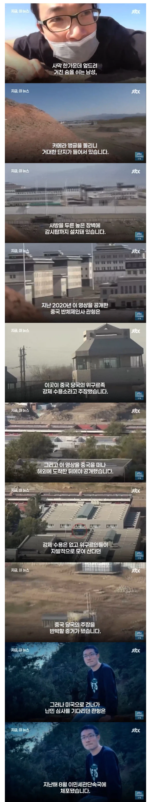

https://bbs.ruliweb.com/best/board/300143/read/75315484

난민심사 대기중에 ICE에 잡혀감
중국으로 추방될 위기에 처했으나
사법부가 야이 ㄸㄹㅇ색히들아 갈기고
신속히 망명 허가 판결함
https://bbs.ruliweb.com/best/board/300143/read/75315484

난민심사 대기중에 ICE에 잡혀감
중국으로 추방될 위기에 처했으나
사법부가 야이 ㄸㄹㅇ색히들아 갈기고
신속히 망명 허가 판결함
방중선물로 전세기에 태워보내려고 했나 씹
ICE 이 미친 새끼들 ㄷㄷㄷ
시진핑 똥 소믈리에 특랑보
중국공산당의 최고 실책 중 하나는 결국 자기네들이 정권을 유지하려 했으면 중국인들을 똑똑하게 만들면 안됐었음. 계속 stay foolish, stay hungry 상태를 유지했어야 하는건데, 중국인들을 똑똑하게 만들어버려서 사람같지 않은 짓을 행하는 공산당에 반기를 드는 대협들이나 사회부조리에 탕평으로 응수하는 청년들이 계속 나오는거지.
사람들이 멍청해야만 돌아가는 체제를 만든게 더 실책 아닐까? 그게 그거지만ㅋㅋ
중국이 신장 위구르 지역에 세운 강제수용소
설립은 홍콩의 다국적 민간군사기업
'프론티어 서비스 그룹'이 시행했는데
그 회사를 설립한 자는
네이비씰 출신으로 블랙워터를 설립한
에릭프린스임
https://share.google/cPYVeya1dPVAl9FKm
에릭 프린스는 도날드 트럼프와 블라디미르 푸틴의 커넥션을 이어준 자이며
https://share.google/qjty4ZanK9xrpOs3C
그 공으로 자기 누나 벳시 다보스를
트럼프 행정부 1기의 교육부 장관으로 꽂아주기도 함
벳시 다보스는 교육분야에 대해 문외한인
다단계회사 암웨이 사장 마누라였을 뿐임
그냥 ICE가 병신이라서 저 지랄을 했을 수도 있지만,
트럼프가 본인의 후원자이자,
필요하면 수족처럼 부리는 용병대장이 연관되어
있으니까 폭로자의 입을 막으려고 벌였을
가능성도 충분해 보임
이런비하인드가숨어있을줄은
트럼프가 그정도로 현명하지 않음
나도 트럼프 이새끼 멍청해 보여도 뭔가가 있다! 아닐수가 없다! 암만 치매 노머고 새끼라도 미대통령 아니냐!!!! 이렇게 생각했거든? 캐나다한테 지랄 하는거랑 이란전쟁 때문에 그런 생각이 일절 없어졌음. 걍 멍청한거야.
트럼프 대통령 전 일화들만 봐도 멍청하다는 평임
ㅅㅂ나도 "고도의 전략이다", "멍청한 척 하지만 엄청난 계산이 숨어있다" ㅇㅈㄹ하다가 올해 생각 바뀜ㅋㅋㅋ 그냥 ㅄ이었음ㅋㅋㅋ
역시 시진핑핑이 애스릭커는 대럼프